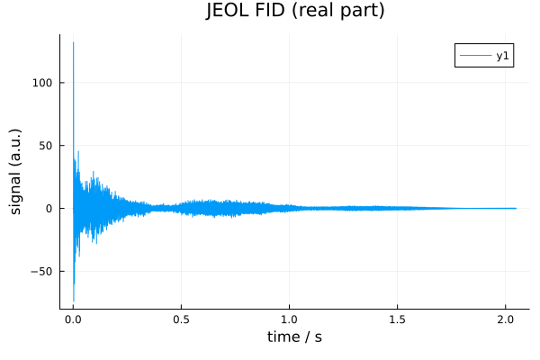
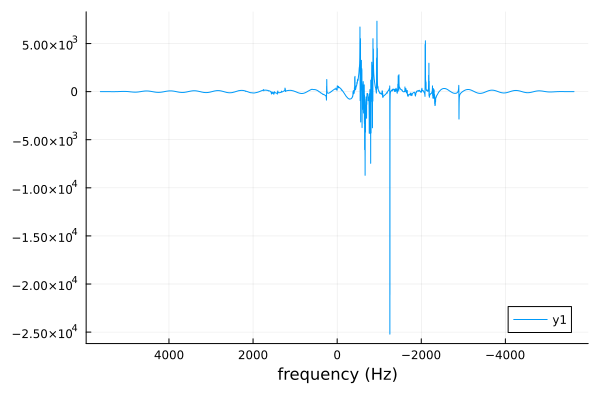
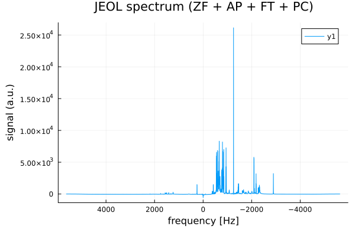
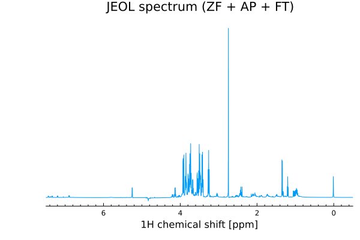
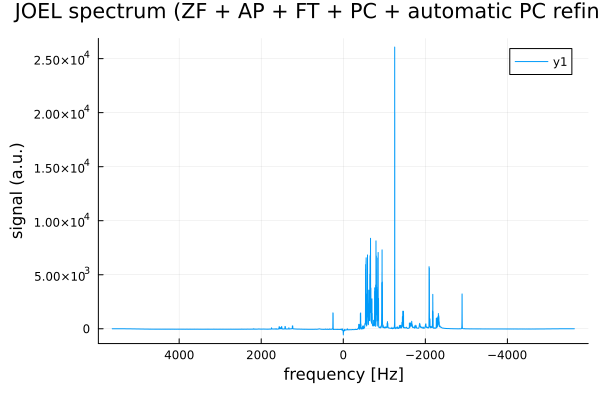
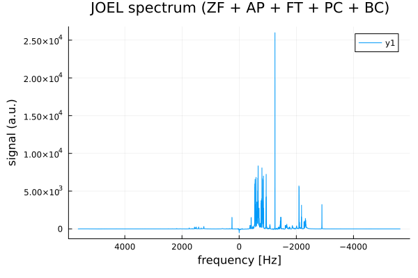
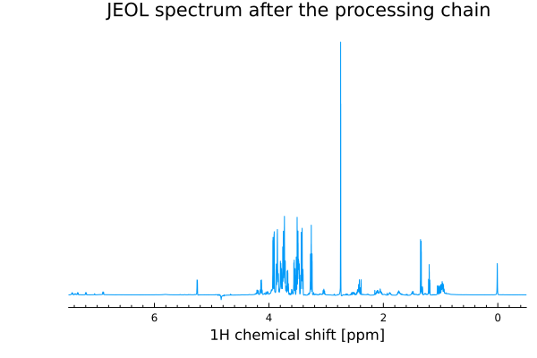

Classical Processing Pipeline
Processing operations in NMRflux.jl are callable objects, not plain functions. Each carries its own configuration and acts on SpectData. Once configured, they compose into pipelines you can reuse across datasets.
1. The NMRProcessor abstraction
abstract type NMRProcessor <: Function endA concrete processor stores whatever parameters or precomputed plans it needs, and defines a call method that uses them. It behaves like a function, but carries its configuration with it. Processors that act on a single dimension subtype NMRProcessor1D instead. These only have to handle a one dimensional SpectData, and they must carry a dim field naming the dimension they apply to. mapslices does the rest, lifting them to higher dimensional data. A processor will also accept a bare AbstractArray: the array is promoted to SpectData with unit range coordinates, processed, and the numerical part handed back.
2. Chaining processors
Chain applies its arguments in the order you list them:
Chain(fs::Vararg{Function}) = reduce(∘, reverse(fs))So Chain(p1, p2, p3) behaves like x |> p1 |> p2 |> p3. The signature accepts any Function, so plain functions and anonymous functions can sit in a chain alongside processors. We use the bundled JEOL example throughout this page.
using NMRflux
using NMRflux.Examples
using Plots: plot, savefig
data_jeol = NMRflux.Examples.Data["Spheroid culture medium"]
jdf_file = joinpath(data_jeol["path"], "yp-5-fu-2.5-100.jdf")
params, data_td = NMRflux.load(jdf_file, :JEOL)
size(data_td)(23072,)plot(data_td;
xlabel = "time / s",
ylabel = "signal (a.u.)",
title = "JEOL FID (real part)"
)
3. Zero filling
ZeroFill(SI=n) extends the data by appending zeros, one target size per dimension. It raises the digital resolution of the transformed spectrum without adding any experimental information. The target size must be at least the current size.
zf = ZeroFill(SI=2^16) # Create ZeroFill processor
data_p = data_td |> zf # Apply zero filling to the SpectData object
(size(data_td), size(data_p)) # Before/after sizes((23072,), (65536,))4. Apodization (Apodize)
Apodization applies a decay function (window) to the time-domain FID. In practice, this damps the tail of the FID, reducing truncation artefacts and high frequency noise in the frequency domain at the cost of some line broadening. It is typically applied after zero filling and before the Fourier transform.
In NMRflux.jl, apodization is implemented by the processor Apodize, which acts on SpectData by multiplies the data along selected dimensions by an exponential factor of the form:
\[f(t) = \exp(-R t)\]
where R is the user specified decay rate constant.
Internally, Apodize uses the coordinate vector of each selected dimension to compute this exponential weighting and multiplies it into the underlying data array. The coordinate vectors are preserved. For time domain FIDs, R therefore has units of 1/seconds. Continuing from the previous section, we apply apodization to the zero filled FID data_td_joel_zf:
ap = Apodize(R=0.5pi) # Decay constant for the first (time) dimension
data_p = data_td |> zf |> ap ;(65536,) SpectData Vector{ComplexF64} with coords:(0.0:8.879230202418619e-5:5.819003513155042,)This produces a windowed time domain signal suitable for Fourier transformation.
5. Fourier transform (FourierTransformPlan)
The Fourier transform converts a time domain FID into a frequency domain spectrum. After zero filling and apodization, applying the FFT produces a complex spectrum whose real and imaginary parts can be used for further processing (phase correction, baseline correction, peak picking, etc.).
NMRflux.jl provides a simple interface to the sophisticated FFTW library. In most cases, it is sufficient to generate a processor by calling FourierTransform(), which applies a discrete Fourier transform along the first dimension of the data. The corresponding data axis (typically in seconds) is thereby automatically converted into frequency (in Hz). If the data has more than one dimension, and the Fourier transform is to be applied along another dimension, it is possible to say FourierTransform(dim=2). Two-dimensional transforms can be generated by Chain(FourierTransform(dim=1), FourierTransform(dim=2)).
ft = FourierTransform()
data_p = data_td |> zf |> ap |> ft
plot(data_p, xaxis=:flip, xlabel="frequency (Hz)")
This spectrum shows severe phase distortions, which need to be corrected. This is discussed in the next section.Note:
For special cases, where computational performance is of vital importance, another interface to the FFTW library is provided: In NMRflux.jl, the processor FourierTransformPlan wraps FFTW's FFT planning and updates the coordinate axes accordingly. For each transformed dimension:
- The FFT is applied to the data
- The coordinate axis is replaced by a frequency axis based on the sampling interval (Nyquist theorem)
- By default, the spectrum is shifted so that zero frequency appears at the centre (fftshift = true). This behaviour can be disabled by setting fftshift = false.
The FourierTransformPlan constructor is declared as:
function FourierTransformPlan(SI::Vector, dims::Vector; fftshift = true)
dummy = zeros(ComplexF64, SI...)
plan = FFTW.plan_fft(dummy, dims)
return FourierTransformPlan(dims, SI, fftshift, plan)
endSI: size of the data array (e.g. [N] for 1D, [N1, N2] for 2D)dims: dimensions along which the FFT is computed (e.g. [1], [1, 2])fftshift: whether to apply FFTW.fftshift so that zero frequency is in the centre of the axis
Example: Continuing from Section 4.4, we start from the apodized, zero filled FID data_td_joel_zf_ap:
SI = 2^16 # Size of the apodized time domain data (1D)
ft = FourierTransformPlan([SI], [1]; fftshift = true) # Construct a FourierTransformPlan along the first dimension, with fftshift
data_p = data_td |> zf |> ap |> ft ; # Apply FT to the apodized zero filled SpectData(65536,) SpectData Vector{ComplexF64} with coords:(-5631.118786218705:0.1718507297236196:5631.118786218705,)6. Phase correction (PhaseCorrect)
After Fourier transformation, NMR spectra usually require phase correction before the real part of the spectrum can be interpreted as an absorption mode spectrum. Phase errors can lead to dispersive lineshapes, asymmetric peaks, and negative peak components. PhaseCorrect applies zero-order and first-order phase correction along a chosen dimension.
ph0: zero order phase (radians), a uniform rotation applied to all pointsph1: first order phase (radians per axis unit), a linear phase rampdim: the dimension along which the correction is applied (typically1for 1D spectra)
Continuing from the previous section, we start from the frequency domain, zero filled, apodized spectrum data_fd_joel_zf_ap:
pc = PhaseCorrect(ph0=-0.55pi, ph1=2pi*0.00175)
data_p =data_td |> zf |> ap |> ft |> pc
plot(data_p, xaxis=:flip,
xlabel = "frequency [Hz]",
ylabel = "signal (a.u.)",
title = "JEOL spectrum (ZF + AP + FT + PC)")
In the above example, the value of ph1 has been chosen to compensate a (known) group delay caused by digital filtering of 1.75 ms. In practice, ph0 and ph1 are often adjusted until the peaks in the real part of the spectrum are predominantly absorptive and symmetric. This can be done manually, interactively, or by using an automatic phase correction method. Via the generic NMRProcessor1D machinery, PhaseCorrect can also be applied slice wise along a chosen dimension of higher dimensional SpectData objects.
PPM conversion
The frequency axis that FourierTransformPlan produces is centred on the transmitter. Dividing it by the observe frequency in MHz converts it to ppm, and adding the shift of the reference line puts it on the conventional scale. This dataset was acquired at 600 MHz with the transmitter on the water resonance at 4.835 ppm, which is where the two constants below come from. The SpectData object data_p has a horizontal axis in Hz, resulting from Fourier transformation of the original time-domain data (in seconds). NMRflux provides a processor CoordMap that applies a function to each value of a coordinate axis. We use this to convert the horizontal axis into ppm:
plot(
data_p |> CoordMap(f->f/600+4.835),
xaxis=:flip, xlabel = "1H chemical shift [ppm]", xlims=[-0.5,7.5],
label=nothing,
grid=false,
yaxis=false,
minorticks=10,
title = "JEOL spectrum (ZF + AP + FT)"
)
7. Automatic phase correction (AutoPhaseCorrectChen)
AutoPhaseCorrectChen provides an automatic phase correction processor based on the minimum entropy method of Chen et al. [J. Magn. Reson. 158 (2002), 164–168]. The method estimates phase correction parameters by minimizing an entropy based objective function.
The processor first optimizes the zero-order phase and then refines both zero-order and first-order phase terms. The optional penalty parameter γ adds a penalty for negative real valued points in the corrected spectrum. This can help reduce overcorrection, especially in noisy spectra.
dim: dimension along which phase correction is applied, typically1for 1D spectraverbose: iftrue, prints optimisation informationγ: penalty strength for negative real-valued points; default is1.0e-5
Automatic phase correction is most reliable when the spectrum is already reasonably close to the correct phase. For spectra with substantial first-order phase error, an approximate manual correction can be applied first, followed by AutoPhaseCorrectChen as a refinement step. Note that while AutoPhaseCorrectChen() is generally able to find the correct value for ph0 robustly, the first order phase error has to be small for the refinement algorithm to converge. Therefore, a rough phase correction should always precede the application of AutoPhaseCorrectChen().
Example: automatic refinement after approximate manual phase correction.
We start again from the zero filled, apodized, Fourier transformed spectrum data_fd_joel_zf_ap. First, an approximate manual correction is applied. The automatic method is then used to refine the result:
apc = NMRflux.AutoPhaseCorrectChen()
data_p = data_td |> zf |> ap |> ft |> pc |> apc ;
plot(data_p, xaxis=:flip,
xlabel = "frequency [Hz]",
ylabel = "signal (a.u.)",
title = "JOEL spectrum (ZF + AP + FT + PC + automatic PC refinement)")
The automatically corrected spectrum should still be inspected visually. This is especially important for noisy spectra, spectra with strong baseline distortions, spectra with large residual solvent signals, or spectra with unusual peak shapes. In such cases, changing the penalty parameter γ may help reduce excessive negative peaks or overcorrection.
For example, a penalty can be used as follows:
apc_with_penalty = NMRflux.AutoPhaseCorrectChen(γ=1.0e-4)
data_p = data_td |> zf |> ap |> ft |> pc |> apc_with_penalty ;(65536,) SpectData Vector{ComplexF64} with coords:(-5631.118786218705:0.1718507297236196:5631.118786218705,)8. Baseline correction (MedianBaselineCorrect)
After phase correction, spectra often exhibit slowly varying offsets or slopes in the real part, known as baseline distortions. These can bias peak integration and make peak picking less reliable. Baseline correction should be applied after phase correction, so that the real part contains the absorptive peaks. The MedianBaselineCorrect implements a robust baseline correction for the real part of a spectrum. The algorithm follows the method of M. S. Friedrichs (Journal of Biomolecular NMR, 5 (1995) 147-153) and proceeds as follows along a chosen dimension:
- For each position along the axis, a local window of width
2 * wdw + 1points is considered - Within this window, local extrema (minima and maxima) of the real part are extracted
- The median of these extrema is taken as a robust estimate of the local baseline
- The sequence of baseline estimates is then smoothed by convolution with a Gaussian like kernel
- The resulting smooth baseline is subtracted from the original complex data (affecting primarily the real part)
The processor is constructed as:
NMRflux.MedianBaselineCorrect(; dim=1, wdw=2<<12)where:
dim: dimension along which baseline correction is performed (default1)wdw: half width of the local window in points (controls the "smoothness" scale of the baseline)
Example: Continuing from the previous section, we start from the phased frequency domain spectrum data_fd_joel_zf_ap_pc:
mbc = NMRflux.MedianBaselineCorrect() # baseline correction along dimension 1 with default window size
data_p = data_td |> zf |> ap |> ft |> pc |> apc |> mbc;(65536,) SpectData Vector{Float64} with coords:(-5631.118786218705:0.1718507297236196:5631.118786218705,)plot(data_p, xaxis=:flip,
xlabel = "frequency [Hz]",
ylabel = "signal (a.u.)",
title = "JOEL spectrum (ZF + AP + FT + PC + BC)")
9. Other 1D processors
Three further processors are exported and follow the same calling pattern. All three run below against the baseline corrected spectrum from section 7, so the documentation build exercises them every time it runs.
Derivative(; dim=1)returns the first derivative alongdimfrom a five point central difference stencil. The first two and last two points fall outside the stencil, so they come back as edge artefacts.Integral(; dim=1)returns the running integral alongdim, accumulated point by point with the rectangle rule. The result is a cumulative trace the same length as the input. Getting a peak area from it means taking the difference between two points, so treat it as raw material for an integration workflow.
Both compute the local sample spacing directly from the coordinate, so it no longer has to be a uniform range.
deriv = Derivative(dim=1)(data_p)
cumulative = Integral(dim=1)(data_p)
(size(deriv.dat), size(cumulative.dat))((65536,), (65536,))PeakAlign(; dim=1, readpos, wdw)searches thewdwpoints either side ofreadpos, takes the largest absolute value it finds there, and shifts the spectrum cyclically so that feature lands onreadpos. This is the usual way to bring a set of spectra onto a common reference signal such as TMS.
The search window is not clipped at the array bounds, so keep readpos at least wdw points away from either end of the spectrum. The shift is computed in whole points, so the aligned feature lands within one point of readpos.
aligned = PeakAlign(dim=1, readpos=0.0, wdw=500)(data_p)
size(aligned.dat)(65536,)10. A typical 1D pipeline
The common sequence is zero filling, apodization, Fourier transformation, phase correction, and baseline correction. Assembled as a chain, that reads:
using NMRflux
using NMRflux.Examples
using Plots: plot, savefig
data_jeol = NMRflux.Examples.Data["Spheroid culture medium"]
jdf_file = joinpath(data_jeol["path"], "yp-5-fu-2.5-100.jdf")
params_JEOL, data_td_JEOL = NMRflux.load(jdf_file, :JEOL)
N_new = max(length(data_td_JEOL.dat), 2^16)
p = Chain(
ZeroFill(SI=2^16),
Apodize(R=0.5pi),
FourierTransform(),
PhaseCorrect(ph0=-0.55pi, ph1 = 2pi * 0.00175),
MedianBaselineCorrect(wdw=2048),
CoordMap(f->f/600+4.835)
)
JEOL_data_processed = p(data_td_JEOL)
plot( JEOL_data_processed,
xaxis=:flip, xlabel = "1H chemical shift [ppm]", xlims=[-0.5,7.5],
label=nothing,
grid=false,
yaxis=false,
minorticks=10,
title = "JEOL spectrum after the processing chain"
)
The chain reproduces the step by step result from the sections above. Once a set of parameters works for a given experiment, the whole pipeline becomes a single reusable object.